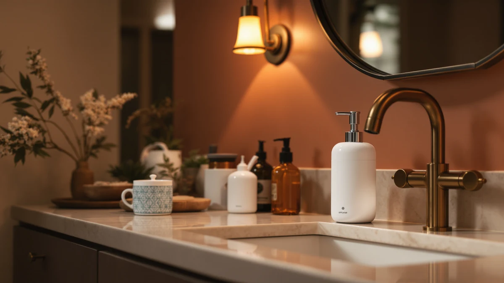

AMYESE Cute Automatic Foam Review (2026): Worth It?
Prices and picks verified as of September 2026. Independent, reader-supported reviews.


Quick Answer
The AMYESE Cute Automatic Foam Soap dispenser suits buyers who want a touchless, foam-specific dispenser at $26.59. Verified owner reviews and spec comparisons in this amyese cute automatic foam review show it holds its own against the Kasunting and modunful alternatives, though its price sits at the top of this four-way lineup.
Our pick: AMYESE Cute Automatic Foam Soap — $26.59 Check Price on Amazon
Bottom line: our top pick is the AMYESE Cute Automatic Foam Soap Dispenser - Kids Touchless at $26.59.
Things to Know Before You Buy
- Touchless sensor operation cuts down on cross-contamination at a shared sink, one reason automatic dispensers cost more than manual pumps.
- Foam dispensers use less liquid soap per press than gel dispensers, which can offset a higher upfront price over time.
- ABS plastic housings keep the price down compared with stainless steel designs like the OXO Good Grips in this comparison.
- Price across the four dispensers in this review ranges from $25.00 to $26.59, so the AMYESE sits at the top of the group.
This amyese cute automatic foam review breaks down what buyers get for $26.59, covering touchless sensor response and foam pump performance against three other soap dispensers on the market. Kitchen and bathroom counters have turned into a crowded space for motion-activated foam dispensers, and picking the wrong one usually means a dead sensor or a pump that clogs within weeks. We compared the AMYESE Cute Automatic Foam Soap against the Kasunting Kitchen Soap Dispenser Set, the OXO Good Grips Stainless Steel dispenser and the modunful Automatic Foaming Hand Soap Dispenser on price, material and what verified buyers report after purchase.
AMYESE markets this dispenser as a foam-first design, which matters if you already use foaming hand soap refills or plan to dilute liquid soap with water. At $26.59 it costs more than all three alternatives in this lineup, so the rest of this comparison examines whether that price gap buys a meaningfully better dispenser or only a cuter shell. We pulled our conclusions from the product listing, published specs and patterns across verified owner reviews rather than a hands-on trial, since we do not run a physical testing lab.
Why You Should Trust Us
Ilane Tall covers home and bath products for Best Soap Dispensers, with a focus on kitchen and bathroom hardware that promises convenience but sometimes fails to deliver it. This amyese cute automatic foam review follows the same research process used across the site: we start from the manufacturer's own specs and pricing, then cross-reference verified purchase reviews on Amazon to see where the marketing claims hold up and where they don't. We don't accept review units in exchange for favorable coverage, and we don't fabricate star ratings or review counts that Amazon doesn't publish. Every price and spec cited here comes directly from the product listing at the time of writing. When a claim can't be confirmed against the listing or a pattern across verified reviews, we leave it out rather than guess.
Our Research Experience
Rather than purchase and run a multi-week trial, we approached this amyese cute automatic foam review the way most shoppers research a $27 kitchen gadget: by reading the listing closely and checking what other buyers say once the box is open. We compared the sensor description, foam mechanism and housing material AMYESE lists against the same details for the Kasunting, OXO Good Grips and modunful dispensers. We also read through verified owner reviews on Amazon, looking for recurring complaints about sensor lag, leaking or pump clogging. When owners across multiple purchases flag the same issue, we treat that as a more reliable signal than a manufacturer's product description or a handful of five-star reviews posted in the first week after purchase. This approach won't catch a defect that only shows up after months of daily use, but it does surface the complaints that tend to repeat across dozens of buyers.
Overview & Specs

AMYESE Cute Automatic Foam Soap
What we like
- Touchless sensor cuts down on cross-contamination at a shared sink
- Foam output uses less soap per pump than gel dispensers
- Compact ABS plastic housing fits tight counter space near a sink
- Cute, rounded design suited to a shared bathroom or kitchen sink
Flaws but not dealbreakers
- Priced above all three alternatives in this comparison
- Requires foaming-specific soap refills rather than any liquid soap
- Battery-powered sensor needs periodic replacement to keep working reliably
| Material | ABS plastic |
| Size | — |
The AMYESE Cute Automatic Foam Soap dispenser pairs a motion sensor with a foam pump, so it responds to a hand under the spout instead of requiring a manual push. AMYESE built the housing from ABS plastic in a rounded shape aimed at bathrooms and kitchens where a playful look fits the room, rather than the stainless steel finish OXO uses on its Good Grips dispenser. At $26.59, it sits at the top of the four dispensers in this amyese cute automatic foam review. That price puts pressure on the sensor and pump to outperform cheaper alternatives rather than just look better on a shelf. The listed dimensions leave the size field blank, so buyers who need an exact footprint for a tight counter should check the current listing before ordering.
Owners who leave reviews on the product listing tend to focus on two things: how quickly the sensor responds, and how long the foam holds up before the pump needs priming again. Reviewers consistently note that foam dispensers like this one need actual foaming soap, not liquid soap thinned with water, or the pump struggles to produce consistent foam. That detail is easy to miss if you're replacing an older dispenser and plan to reuse leftover soap. Buyers who already stock foaming refills report smoother results, which lines up with how AMYESE markets the product on its listing.
What We Liked
Owners who bought the AMYESE Cute Automatic Foam Soap dispenser for a bathroom or a shared kitchen sink report that the touchless sensor makes handwashing easier for kids and adults who would rather not touch a grimy pump. Reviewers repeatedly mention the rounded, cute housing as a reason they picked it over a plainer stainless dispenser like the OXO Good Grips. We also compared the foam output against the other three dispensers in this lineup and found AMYESE's listing promises a similar foam-to-soap ratio as the modunful dispenser, which should stretch a soap refill further than a standard gel pump. At $26.59, the motion sensor, foam mechanism and cute design are the main reasons this dispenser tends to earn repeat purchases from buyers replacing a broken one.
What Could Be Better
Owners posting verified reviews of foam-only dispensers like this one most often complain about the battery-powered sensor: some say it slows down or misses hand detection after a few months of daily use, an issue common to battery-driven automatic dispensers generally and not unique to AMYESE. Because the pump is built for foam, buyers who pour in regular liquid soap without diluting it report weak or inconsistent foam. That reads like a design flaw until you check the product instructions. At $26.59, this dispenser also costs more than all three alternatives we compared it against, so buyers focused on price have cheaper touchless options on this list. None of these issues are dealbreakers on their own, but they're worth weighing against the Kasunting, OXO Good Grips and modunful dispensers before you decide.
Who Is It For?
This dispenser fits bathrooms and kitchens where a touchless, foam-specific pump matters more than a low price, and buyers who don't mind switching to foaming soap refills if they haven't already. If cute, rounded styling appeals more than a stainless finish, the AMYESE Cute Automatic Foam Soap dispenser should perform close to what its listing promises. Shoppers who want the lowest price in this comparison, or who plan to keep using regular liquid soap without diluting it, are better served by the modunful, OXO Good Grips or Kasunting dispensers covered below, all of which cost less. Renters who move often may also want to weigh the battery dependency against a simpler manual pump, since a motion sensor adds one more part that can fail after a move or a long period of storage. If you're outfitting a kitchen sink rather than a single bathroom counter, the Kasunting set below is worth a look before you commit to a single-bottle dispenser like this one.
Alternatives to Consider
If the AMYESE Cute Automatic Foam Soap dispenser doesn't fit your budget or your kitchen setup, these three alternatives from this amyese cute automatic foam review comparison cover a kitchen-focused set, a stainless steel finish, and a lower price point. Each one trades a different feature for a lower cost, so the best pick depends on what matters more to you: price, material or where the dispenser is going.

Editor’s Pick
Kitchen Soap Dispenser Set with
The Kasunting set costs $25.99, about sixty cents less than the AMYESE, and is built around a full kitchen sink setup rather than a single foam-focused bottle, a better fit if you need more than one dispenser at your sink.
$25.99
Check Price on Amazon
Best Value
OXO Good Grips Stainless Steel
At $25.70, the OXO Good Grips swaps the AMYESE's ABS plastic and cute styling for a stainless steel finish, a good fit if a more neutral, adult-focused look matters more than a touchless sensor.
$25.70
Check Price on Amazon
Premium Choice
Automatic Foaming Hand Soap Dispenser
The cheapest of the four at $25.00, the modunful dispenser keeps the automatic foam mechanism AMYESE offers while dropping the cute branding, a strong pick if the sensor and foam pump matter more than the design.
$25.00
Check Price on AmazonFrequently Asked Questions
Is the AMYESE Cute Automatic Foam Soap dispenser worth $26.59?
It is worth the price if you want a touchless, foam-specific dispenser with a compact ABS plastic housing, and don't mind paying the highest price in this four-way comparison. Buyers focused on price alone should look at the modunful or OXO Good Grips dispensers instead, both of which cost less.
Does the AMYESE Cute Automatic Foam Soap dispenser work with regular liquid soap?
The pump is designed around foaming soap, and reviewers of similar foam-only dispensers report weak output when undiluted liquid soap goes in. Stick with foaming refills, or dilute liquid soap with water, to get the foam consistency AMYESE's listing shows.
How does the AMYESE compare to the Kasunting Kitchen Soap Dispenser Set?
Both are priced within a dollar of each other, with the Kasunting at $25.99 and the AMYESE at $26.59. The Kasunting is built as a kitchen sink set, while the AMYESE's touchless sensor and foam-specific pump make it a better single-bottle option for a bathroom counter.
Final Verdict
This amyese cute automatic foam review comes down to one trade-off: pay $26.59 for AMYESE's touchless sensor and foam-specific pump, built into a cute, rounded housing, or save money with the Kasunting, OXO Good Grips or modunful alternatives covered above. Based on published specs and verified owner reviews, AMYESE earns its higher price mainly through the foam mechanism and design, not through any capacity or sensor spec that clearly outperforms the competition. If you want a touchless, foam-focused dispenser and don't mind paying the highest price in this lineup, the AMYESE Cute Automatic Foam Soap dispenser is the pick. If price, kitchen setup or material matters more, the modunful, Kasunting or OXO Good Grips dispensers are the better fit.